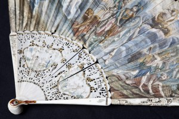
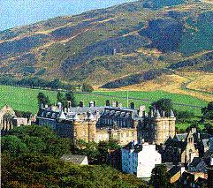

Prince Charles at Edinburgh
Le Prince Charles à Edimbourg
from the MS at Towneley Hall
Tune - MélodieUnknown, replaced by "Prince Charlie's Medley"
Scottish Jig published in James Stewart-Robetson's "Athole Collection" in 1884
Sequenced by Christian Souchon

|
To the picture:
A fan with Jacobite insignia was given the ladies who attended the ball given at Holyrood palace in honour of the Prince. It was painted on paper and mounted on ivory sticks. All the fans were produced within a matter of days of the event! (Kept at the "West Highland Museum" at Fort William). To the tune: Stewart-Robertson notes: "Danced at Holyrood, 1745". Charlie and his Highlanders captured Edinburgh on 17th September 1745. The same day his father was proclaimed King James VIII of Scotland and III of England. Charlie held court at the Palace of Holyroodhouse. The following tunes are modern: It is not sure wether their authors consider them as Jacobite tunes. |
A propos de l'illustration:
Un éventail au décor jacobite fut offert aux dames qui assistaient au bal donné à Holyrood en l'honneur du Prince. Il était peint sur papier et monté sur des bâtonnets d'ivoire. Tous ces éventails furent fabriqués en quelques jours, juste avant l'événement ! (Conservé au "West Highland Museum" à Fort William). A propos de la mélodie: L'éditeur de ce morceau note: "Joué à Holyrood en 1745' L'arméee de Charlie prit Edimbourg le 17 septembre 1745 Le même jour, son père fut proclamé roi: Jacques VIII d'Ecosse et III d'Angleterre. Charlie fêta cet événement au Palais de Holyrood. Les mélodies suivantes sont modernes: Il n'est pas sur que leurs auteurs les considèrent comme jacobites. |
Prince Charles of Edinburgh by John Robertson
Sequenced by John Chambers - jc@trillian.mit.edu
Map
|
On the
18th of September 1745,
anxious about the result, Charles who had slept only two hours, at an early hour received intelligence of the capture of the city, and immediately prepared to march toward it with the rest of the army. To avoid the castle guns of the Hanoveran garrison under General Guest , the prince took a circuitous direction to the south of the city. He proceeded to the royal palace of Holyrood. On coming within sight of the palace, he beheld the park crowded with people, who had assembled to welcome his arrival. Charles remained some time in the park among the people, but as he could not be sufficiently seen by all, he mounted his horse, a fine bay gelding which the Duke of Perth had presented to him, and rode off slowly towards the palace. Every person was in admiration at the splendid appearance he made on horseback, and a simultaneous huzza arose from the vast crowd which followed the prince in triumph to Holyrood House.
To complete this eventful day, the solemn proclamation at the Cross of the Chevalier de St. George as King James III, was made, a little before one o'clock afternoon, amid the general acclamations of the people, by the heralds and pursuivants, clothed in their robes of office and surrounded by a body of armed men who had secured them for the ceremony. Source: Electricscotland.com |
Le
18 septembre 1745
, impatient de connaître le résultat, Charles, n'avait dormi que deux heures, quand il fut informé de bon matin de la prise de la ville et aussitôt il se prépara au départ avec le reste de l'armée. Pour éviter les canons du château tenu par une petite garnison hanovrienne sous les ordres du général Guest, le Prince emprunta un itinéraire détourné passant par le sud de la ville. Il se dirigea vers le palais royal d'Holyrood. En arrivant en vue du palais, il aperçut le parc noir de monde accouru pour saluer sa venue. Charles resta quelque temps dans le parc au milieu du peuple, et, comme tous ne pouvaient pas assez bien le voir, il monta sur le cheval bai que lui avait offert le Duc de Perth et poursuivit son chemin vers la palais. Chacun était en admiration devant la prestance de ce cavalier et les hourras fusaient de tous les côtés à la fois dans le cortège qui l'accompagnait vers Holyrood House.
Pour parachever cette mémorable journée, au Mercat Cross , le Chevalier de Saint Georges fut proclamé roi Jacques III, peu avant une heure de l'après-midi, sous les acclamations du peuple, par les hérauts d'armes et poursuivants revêtus de leurs habits d'apparat, entourés des hommes en armes qui étaient venus les requérir pour la cérémonie. Source: Electricscotland.com |
